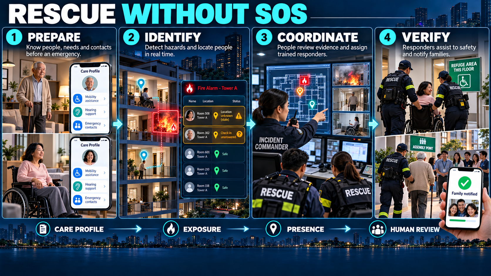

SmartAlarm — Định vị, tối ưu thoát hiểm, AI realtime và chủ động cứu hộ

Phần bắt buộc của full-product baseline 1.0 · 23/10/2026. Bổ sung BR-10 (positioning/optimization), BR-11 (AI decision support), BR-12 (proactive assistance). Dùng cùng phân quyền, event, region, audit, localization và command boundaries trong Basic/Detail Design.
1. WF-23 — Định vị hợp nhất và xác định hiện diện
Positioning service tiếp nhận GNSS ngoài trời; QR/NFC checkpoint; BLE beacon/RTLS; UWB anchors; Wi-Fi positioning khi platform cho phép; wearable/vehicle location; manual report và responder observation. Không giả định điện thoại nào cũng hỗ trợ UWB hoặc hệ điều hành cho quét Wi-Fi liên tục. Mỗi công nghệ cần site survey, calibration, device capability và permission. Bước onboarding site ghi support matrix, expected accuracy measured, coverage holes và fallback.
LocationObservation: subject_ref, source, source_device, observed_at, received_at, lat/lon hoặc local x/y/z, coordinate_frame, floor_ref, uncertainty_m, floor_confidence, heading_deg, heading_uncertainty, method, calibration_version, permission_basis. Indoor coordinate frame có transform sang geodetic và plan revision; validation bằng reference points. Fusion không lấy trung bình tọa độ từ hai tầng: dùng floor hypothesis trước, outlier rejection, motion constraints và quality-weighted estimator; thuật toán Kalman/particle filter là lựa chọn engineering phải benchmark theo site. Last known location luôn có timestamp; không nội suy qua vùng chưa được quan sát như một sự thật.
Presence khác location: registered occupant, expected attendance, observed present, last-seen, reported absent và unknown. Access-control entry chỉ là evidence hiện diện, không chứng minh người vẫn ở đó. GPS bên ngoài không kết luận tầng. Người không mang thiết bị vẫn có roster/check-in/visitor records và manual accountability. Data provenance không bị mất khi một operator chỉnh vị trí; tạo observation mới.
Acceptance: source lệch tầng bị flagged; beacon mất không biến người thành absent/safe; location quá cũ chuyển unknown; user deny tracking vẫn dùng manual SOS; tenant không được truy vấn lịch sử ngoài purpose/scope; calibration update không silently đổi tọa độ incident cũ.
2. WF-24 — Tối ưu phương án thoát hiểm
“Hiệu quả nhất” được định nghĩa là tốt nhất trong tập phương án khả thi và dữ liệu đang có, với ràng buộc an toàn cứng trước, tối ưu thời gian/phân bố sau. Không cam kết tối ưu tuyệt đối khi dữ liệu hiện trường không đầy đủ. Objective đề xuất: minimize weighted travel time + queue delay + uncertainty cost + exposure cost; hard constraints cấm hazard exclusion, closed/unknown critical doors, unsuitable stairs, unavailable destinations và capacity violations. Người bị hạn chế vận động có feasible graph riêng; người cần assisted evacuation có rendezvous/refuge + responder task, không route giả định tự đi.
Planner tạo 1 primary + tối đa 2 alternatives, hiển thị reason, assumptions, validity và route provenance. Crowd optimization dùng aggregate occupancy estimates, measured corridor/stair throughput và uncertainty interval; không chuyển hết người sang một lối chỉ vì shortest path. Flow assignment theo cohort/zone, rate-limited route changes và operator approval khi đổi chiến lược vùng. Hysteresis chống oscillation; emergency hazard withdrawal immediate. Không công bố ETA chính xác đến giây khi chưa có calibration; hiển thị interval và confidence.
Inputs: validated graph; current hazard snapshot; presence quality; exit/shelter availability; assistance profile; actual restrictions; verified weather/road data nếu outdoor. Predictions từ fire/flood simulation chỉ là separate scenario layer, không tự ghi đè observed hazard. Simulation dashboard phải hiển thị assumptions và “not real incident” environment boundary.
Algorithm contract
- Lọc snapshot theo incident, tenant, floor, time và freshness.
- Tạo graph khả dụng bằng hard exclusions; reject insufficient floor/position quality.
- Ước tính edge time từ distance/speed profile và congestion; không dùng bệnh danh làm speed suy đoán tùy tiện, ưu tiên ability self-report/assessed profile.
- Tìm feasible routes, so sánh robust cost dưới uncertainty, giữ alternatives không trùng bottleneck khi có thể.
- Áp dụng destination capacity và cohort balancing; publish route decisions có graph/hazard/policy versions.
- Monitor deviation/new hazard/capacity; replan; invalidate queued old audio; operator nhận reason và affected cohort.
Acceptance: route không cắt polygon cấm; stair-excluded profile không có stairs; unknown capacity không coi unlimited; new hazard withdraw đúng recipients; no feasible path tạo assistance; route failure không chặn manual SOS; compare results với site-approved scenarios và physical walkthrough trước go-live.
3. WF-25 — AI / LLM phân tích thời gian thực
AI Copilot service subscribe read-only incident projections và authorized retrieval corpus. Nhiệm vụ: tổng hợp timeline, phát hiện dữ liệu mâu thuẫn/chưa đủ, đề xuất câu hỏi xác minh, đối chiếu playbook, tóm tắt sensor/camera observations, so sánh các phương án do route engine tính, soạn draft cảnh báo/bản dịch và after-action report. Model không tự tạo location node, ký duyệt warning, phát command, chẩn đoán hoặc đóng incident.
Pipeline: event updates → coalesce theo incident → build scoped context → retrieve approved SOP versions → model inference → structured result validation → evidence/permission/freshness guard → operator review. Câu trả lời có assertion, evidence_refs, observed_at, uncertainty, conflicts, proposed_action, required_approval và expires_at. Mọi factual claim quan trọng không có evidence phải marked unsupported và không được dùng làm instruction. LLM không thể sửa route graph; chỉ gọi read-only tool compare_routes(route_ids) qua allowlisted service, route IDs do deterministic planner cấp.
Realtime có budget đề xuất: incident projection refresh p95 ≤ 2 s; copilot summary target p95 ≤ 10 s khi model available ở tested context size. UI hiện generated_at và data_cutoff; quá TTL chuyển stale, không giả dạng live. Critical alarm, SOS, routing rules và dispatch vẫn chạy khi AI timeout/outage. Không chờ LLM để gửi báo động theo approved policy. Streaming token text không được phát qua loa trước khi validation và approval hoàn tất.
Security: retrieved chat, external metadata và tài liệu đều là untrusted content. Không cho prompt nội dung điều khiển system policy/tool scopes. Tool execution qua policy proxy, no arbitrary network/code, result schema validation, prompt-injection fixtures, source citations. Regional model endpoint theo residency; sensitive health fields bị redacted hoặc chỉ gửi minimal functional needs. Model vendor không được training trên tenant data theo cấu hình/hợp đồng phải xác nhận; deployment self-hosted có thể chọn khi cần. Context logging redacted, retention theo class, không lưu chain-of-thought; lưu model/version, prompt template version, evidence IDs, structured answer và user decision.
Evaluation: scenario set theo hazard/locale, factual grounding, omitted-critical-fact, unsafe-action suggestion, prompt injection, cross-tenant leakage, hallucinated exit, stale evidence, translation meaning, calibration/abstention. Promotion cần threshold đã thống nhất với domain reviewer; không chỉ BLEU/accuracy chung. Human acceptance không tự trở thành training label; feedback có review workflow. AI score không tự quyết định ai đáng cứu trước.
4. WF-26 — Hồ sơ hỗ trợ cứu hộ và quản lý người dùng
Identity profile (tên, liên hệ, age/DOB theo nhu cầu) tách khỏi Assistance Profile nhạy cảm. Profile gồm self-reported functional needs: mobility, stairs capability, wheelchair/walking aid, hearing/vision, communication language, cognitive assistance, caregiver dependency, evacuation equipment, medically relevant emergency notes và optional condition history. Chỉ thu thập điều cần cho cứu hộ; UI không yêu cầu danh sách bệnh toàn diện để dùng app. Age group có thể đủ thay DOB chính xác. Không tự suy ra impairment từ tuổi hoặc tên bệnh.
Nguồn profile: self, authorized guardian/caregiver, authorized clinician/occupational-health role theo service agreement, hoặc responder observation. Ghi source, verification status, effective_at, last_reviewed_at, consent/legal basis, visibility scope và expiration review. Hồ sơ self-report không được gắn “medical verified”. User/caregiver có thể sửa; conflict giữa sources cần review, không mất lịch sử. Guardian relationship phải được xác minh, có quyền field-scoped và revocation; minors/dependent adults cần quy trình theo jurisdiction, không giả định global consent đơn giản.
Phân quyền: citizen xem/sửa hồ sơ mình; caregiver theo ủy quyền; dispatcher thấy functional needs và reason for assistance, không mặc định thấy bệnh sử chi tiết; assigned responder thấy emergency subset cần cho task; medical role được cấp mới xem notes sâu; platform admin không xem. Access vào health record có audit và emergency break-glass có scope/time/reason. Nhóm social chỉ thấy status theo consent, không thấy impairment hoặc medical note.
5. WF-27 — Chủ động ưu tiên khi chưa có SOS
Kích hoạt khi incident ảnh hưởng site/zone: build candidate list từ presence evidence + impact zone + assistance profile + no recent confirmation. Không có SOS không phải bằng chứng không cần trợ giúp. Chia nhóm: known exposed and needs assistance; possibly exposed/stale presence; registered but presence unknown; confirmed away. Known exposed được proactive contact/task theo policy; uncertain presence tạo welfare check trước và cảnh báo độ không chắc, không hiển thị người đang ở phòng X như chắc chắn.
Prioritization là decision support: hazard imminence/exposure, inability to self-evacuate, isolation/no caregiver, route infeasibility, last contact và source confidence. Không dùng wealth/nationality/social importance; tuổi không là tiêu chí độc lập quyết định giá trị người. Category urgency P1/P2/P3 có explicit reasons, confidence và evidence freshness, không black-box “rescue score” tuyệt đối. Operator điều chỉnh có reason/audit; force override chỉ cho role phù hợp. Human clinical triage nếu cần nằm trong protocol được chuyên gia phê duyệt, không do LLM chẩn đoán.
Luồng: incident active → intersect impacted locations/presence → evaluate approved assistance policy → create ProactiveCase với idempotency key incident+person+policyVersion → notify/check-in khi phù hợp → operator review → dispatch assistance task → responder welfare observation/handover → close case. Một person có SOS sau đó phải liên kết case, không dispatch hai đội vì hai nguồn. Không phản hồi escalates chứ không tự “confirmed injured”. Nếu người báo ngoài vùng, giữ correction evidence và re-evaluate; không xóa audit.
Acceptance: người cần hỗ trợ không SOS vẫn vào queue; người đăng ký nhưng vị trí cũ hiện uncertain; profile thiếu không bị mặc định “khỏe”; mọi reason có evidence; hai trigger đồng thời không duplicate task; new SOS links existing case; caregiver revoked không đọc được profile; age change không tự nâng/hạ priority thiếu context; actor không có health scope chỉ thấy minimal assistance needs.
6. Entities / APIs / events
AssistanceProfile(id,person,version,functional_needs,emergency_notes_ref,source,verification,review_due,sharing_policy). CareRelationship(subject,caregiver,authority_ref,scopes,expires,revoked). PresenceEvidence(subject,location,kind,observed_at,confidence,source). ProactiveCase(id,incident,person,policy_version,priority,reasons,evidence_refs,presence_quality,state,task_ref). RouteOptimizationRun(id,input_snapshot,algorithm_version,constraints,alternatives,selected,approver). AIAnalysis(id,incident,model_version,context_cutoff,evidence_refs,result,guard_status,expires,user_decision).
APIs: /assistance-profiles field-level scopes and version; /care-relationships verified grants; /presence-observations source-bound; /incidents/{id}/proactive-cases authorized list; /proactive-cases/{id}/decisions reason + expected version; /guidance/optimizations computed alternatives; /incidents/{id}/ai-analyses asynchronous job with status; /ai-analyses/{id}/reviews accept/reject draft, never command endpoint. Events: presence.updated, assistance_profile.updated, proactive_case.created, guidance.optimized, ai.analysis.ready; payload health minimal, details fetched only with scope.
Services bổ sung: Position & Presence, Assistance Profile & Care Relationships, Proactive Assistance Policy, Route Optimization, AI Copilot/Gateway/Evaluation. Đặt trong regional cell, mã hóa sensitive fields và exact health data không vào generic event broker payload, logs/search/global control plane.
7. Human factors và thông báo
Quyết định thị giác v2 cho vị trí, AI và chăm sóc
Q01–Q03 đặt nguồn, tuổi quan sát, tầng và chất lượng cạnh sơ đồ. Hướng là thuộc tính độc lập: QR có thể xác nhận điểm nhưng không hướng; không nối điểm cũ thành vệt chuyển động chắc chắn. C38 giữ vị trí người tự báo và trợ giúp khi chưa có tuyến. Q04/Q05 phải cho thấy phương án bị loại và lý do bên cạnh phương án đề nghị; màu xanh hoặc đường ngắn không thay bằng chứng khả thi.
Q06/Q07 dùng claim/evidence/unknown, hiển thị nguồn, cutoff và phần chưa biết trước duyệt; Q08/Q09 giữ kiểm soát mô hình, vùng và fallback xác định. AI không được suy diễn người an toàn do mất tín hiệu, sinh exit node không có trong graph duyệt, cấp quyền thiết bị hoặc tự đặt ETA cứu hộ. C08 chỉ nêu thời gian đến khi có nguồn được xác nhận; phân công đội chưa chứng minh đã chấp nhận hoặc tiếp cận.
H08/H09 và O11/O12/O34 ưu tiên người theo nhu cầu chức năng, phơi nhiễm và bằng chứng hiện diện; không xếp người thành số tổng thiếu provenance. Không có SOS khác không cần trợ giúp. Hồ sơ y tế chỉ mở theo scope; thẻ nhu cầu hỗ trợ không lộ chẩn đoán cho mọi vai trò. Trạng thái tự báo an phải có chủ thể/thời điểm, không áp sang gia đình hoặc toàn công trình.
Acceptance v2: thử heading unknown với floor known; nguồn BLE mâu thuẫn QR; tuyến bị thu hồi khi AI đang soạn; dữ liệu người cũ nhưng không có SOS; không có đội phù hợp; ACK đến trễ; người dùng bàn phím/trình đọc màn hình và chế độ kín đáo. Kết quả phải giữ bất định, bỏ chỉ dẫn không hợp lệ, cho bước hỗ trợ thực hiện được và không tạo success hoặc ETA giả. Sơ đồ prototype, gợi ý AI và danh sách người đều là dữ liệu minh họa; chưa chứng minh mô hình định vị hoặc khả năng cứu hộ thực địa.
Màn prioritization hiển thị “Cần trợ giúp di chuyển · được ghi nhận trong vùng ảnh hưởng · cập nhật 2 phút trước” thay vì chỉ tên bệnh/điểm số. Người chưa có profile có nhãn “Chưa có thông tin hỗ trợ”, không “Bình thường”. Người dùng chủ động chọn cách được liên hệ; text/voice/haptics theo preference. Nhật/Việt/Anh dùng terminology reviewed, tránh nhãn kỳ thị. Người phụ thuộc có profile emergency subset và caregiver workflows, không cho một caretaker xem mọi dữ liệu chỉ vì được thêm làm contact.
8. Cổng kiểm chứng
Site survey và indoor positioning ground-truth; route walkthrough và blocked-exit drill; crowd model calibration; clinical/domain review cho assistance policies; privacy review từng jurisdiction; AI grounding/injection tests ba locale; hardware-in-loop và live responder exercise. Tất cả là điều kiện release của phần tương ứng, không bị thay bằng một dashboard prototype hoặc claim “AI realtime” chung chung.
9. Baseline 1.0 — phản hồi thiết bị vật lý, tuyến và ranh giới AI
WF-29 đưa alarm/supervisory/trouble/flow/pressure/pump/valve observations vào hazard context theo source, observed_at, quality và point/zone mapping revision đã duyệt. Chỉ dữ liệu đúng tầng/vùng và còn mới được dùng cho quyết định phụ thuộc. “Bơm chạy” hoặc “van mở” không chứng minh hazard đã hết; route engine không tự mở cạnh bị cấm khi thiếu xác minh site. Impairment/test/maintenance và unavailable fire-water có thể tạo restriction/review task theo policy đã duyệt, không tự suy diễn cháy lan.
Khi controller mất liên kết, mapping đổi, local authority bị thu hồi hoặc hazard mới cắt tuyến, route freshness/constraints được đánh giá lại; hủy queued speech cũ khi route bị rút. Vị trí robot/drone là nguồn riêng, có uncertainty; không coi pose của thiết bị là vị trí nạn nhân. Nhiệm vụ stretcher/assisted evacuation liên kết ProactiveCase và task đã có, giữ owner/handover để không điều hai đội. Completion từ thiết bị không tự xác nhận người an toàn; cần responder observation hoặc self-report đúng loại.
AI chỉ giải thích evidence, mâu thuẫn và thiếu dữ liệu, đề xuất draft phương án. Không ghi cause-and-effect, mở quyền connector, ký release, clear impairment, điều khiển robot/drone hoặc sửa chứng chỉ. Nội dung telemetry/vendor document là untrusted input; capability allowlist và authorization nằm ngoài model. Các service định tuyến/SOS/dispatch tiếp tục khi AI mất dịch vụ.
Acceptance bổ sung: PHY-AI-01 pump ACK không gỡ hazard restriction; PHY-AI-02 stale point hoặc mapping sai tầng không tạo đường “current”; PHY-AI-03 prompt injection trong vendor metadata không phát lệnh; PHY-AI-04 robot task links existing assistance case; PHY-AI-05 device completion không tự safe; PHY-AI-06 test telemetry không cập nhật incident actual. Xem đặc tả màn hình F01–F20 và danh mục thiết bị.